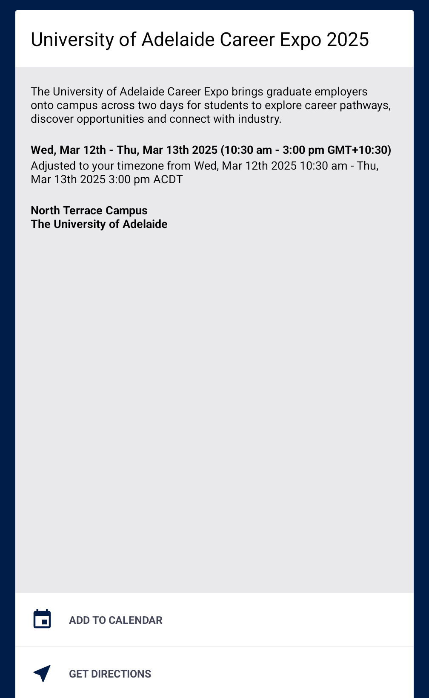
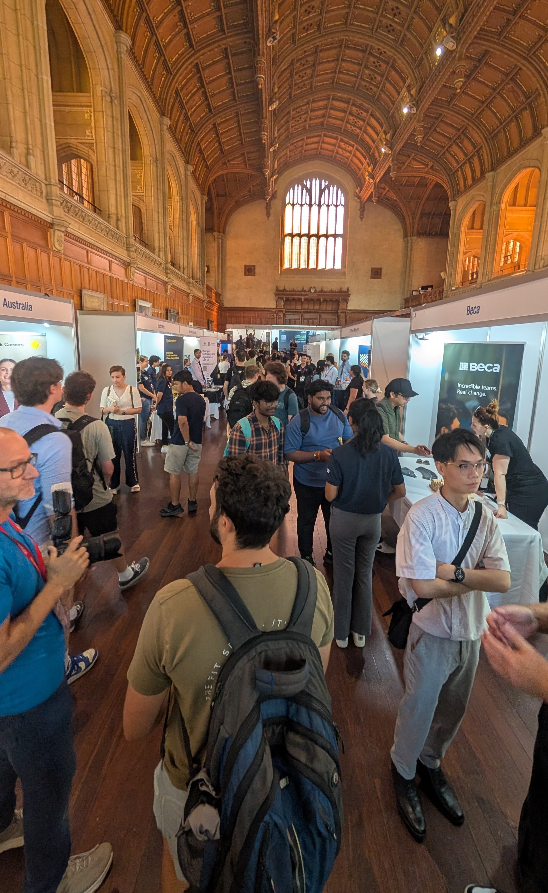
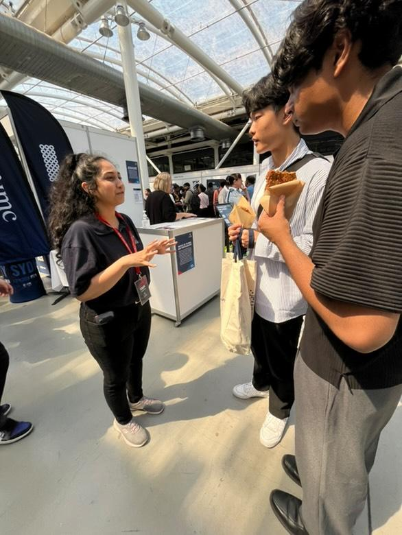
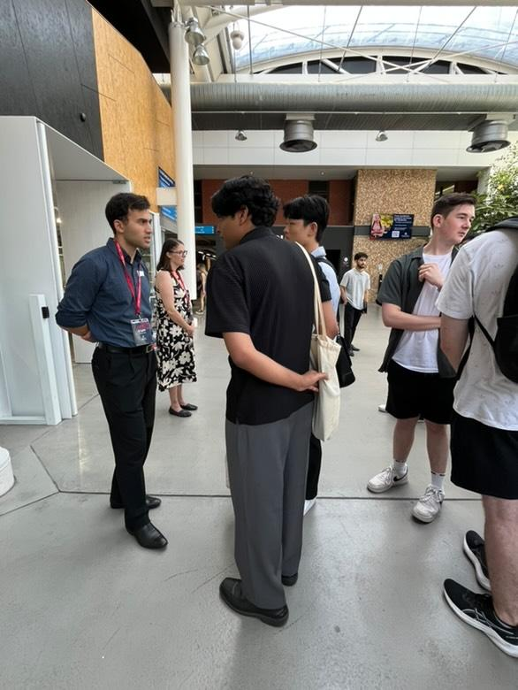
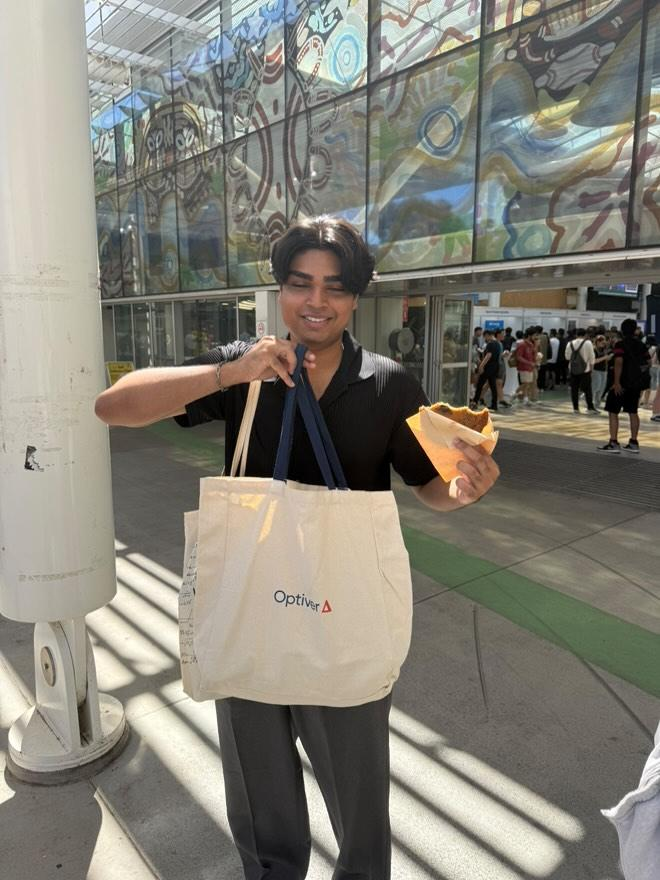
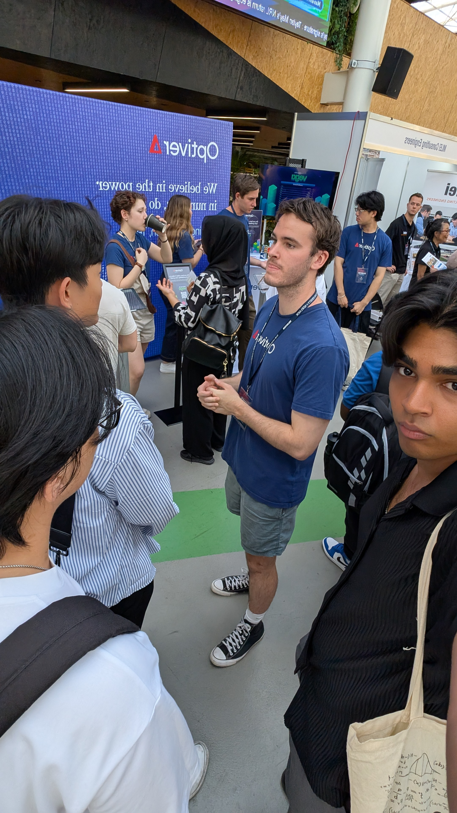

Career Fair App
I logged onto the Career Fair app on March 12, 2025 at 10:30 AM. Here's evidence of my attendance at the expo:
 Screenshot of the Career Fair app and photo of the entrance to Bonython Hall
Attending Employers
Over the course of the two-day career exhibition at the University of Adelaide, a total of 82 industries participated, representing various disciplines, including architecture, business and economics, data science, mathematics, engineering, and more. As someone particularly interested in software engineering, I had the opportunity to engage with recruiters and employees, gaining valuable insights into potential career paths.
Further Study Options
I have decided not to pursue postgraduate studies at this stage, as I want to gain hands-on industry experience and apply the skills I have learned during my undergraduate studies to real world projects. I believe that practical exposure will imrpove my growth in software engineering. Speaking with industry professionals at the exhibition reinforced my decision as many recruiters emphasized that experience and problem solving abilities are valued more than additional academic qualifications for software development roles. While further studies can be beneficial for research positions, my current goal is to develop software and contribute to real projects. That being said, I remain open to reconsidering postgraduate studies in the future if it aligns with my career interests.
Introduction to PPIII Tutors
During the event, I introduced myself to one of the tutors, Bourna. I began by sharing details about my studies and experience in software engineering. Since I do not have direct industry experience yet, I highlighted my personal projects to demonstrate my programming skills. I also sought advice on how to effectively approach industry professionals and ask open ended questions. One key takeaway was that engaging in meaningful conversations and showcasing genuine interest are crucial when networking.
Next Clue Activity
The next clue was to "Take a picture with a merchandise from a company I am interested in". Evidence of me holding merchandises from optiver is shown in the image below
Me holding a tote bag from Optiver and a delicious cookie from Jane Street
Current Opportunities
I had the opportunity to chat with Myles from Optiver, a leading global trading firm. Optiver is currently accepting applications for graduates and internships, specifically targeting penultimate-year undergraduate students pursuing computer science-related degrees.
The application consists of three stages;
Online Application - Submit an application through their online portal, including a resume.
Online Assesment - A general knowledge and problem-solving test.
Interviews - A behavioural interview, Considered the most important, as recruiters assess social and soft skills to determine cultural fit and willingness to learn. And multiple technical interviews, focusing on solving LeetCode style algorithmic questions. Myles advised that Optiver prioritizes clean, well structured code over simply completing the problem. However, solving the problem with an optimized solution is a plus.
Employer Watch List
Here are 10 employers of interest related to my degree:
Non-Interest Employers
Yes, there are several employers at the expo that offer great software engineering opportunities but did not catch my attention. Most of these are Australian defence or government-related companies. The primary reason is that they are only open to Australian citizens due to the confidential nature of their work. As a result, these opportunities are not accessible to me, making it impractical to explore them further. Instead, I am focusing on companies that provide software engineering roles in industries such as fintech, AI, and commercial technology, where eligibility is not restricted by citizenship requirements.
Employability Areas
I located the 5 employability areas at the expo:
Career Management Skills – The ability to plan and progress in a career by developing relevant skills, setting goals, and making informed career decisions.
Internships – Practical work experiences that help students gain industry exposure, develop professional skills, and build a network of contacts.
Employ on Campus – On campus job opportunities that allow students to gain work experience in a familiar environment while balancing studies.
University Specialist Employment Partnership (USEP) – A program supporting students with disabilities in finding employment through tailored career advice and opportunities.
Employability Programs – Initiatives designed to enhance student career readiness, including workshops, mentoring, networking events, and skill-building programs.
Graduate Program Benefits
I discussed graduate programs with James Wilson, Graduate Recruitment Manager at PwC. He explained five key benefits of their graduate program:
- Structured Learning: Most programs include formal training sessions, mentorship, and rotational placements, allowing graduates to gain diverse industry experience.
- Career Progression: Graduate programs often provide a clear career path with opportunities for promotion, making it easier to transition from entry-level roles to leadership positions.
- Networking and Mentorship: Participants connect with industry professionals, mentors, and peers, expanding their professional network and gaining guidance from experienced colleagues.
- Job Security and Stability: Many graduate programs offer permanent positions or fixed-term contracts with competitive salaries, ensuring a smooth transition from university to full-time work.
- Exposure to real world projects: Graduates work on live projects, solving real business challenges and applying theoretical knowledge in practical settings, which enhances their skills and confidence.